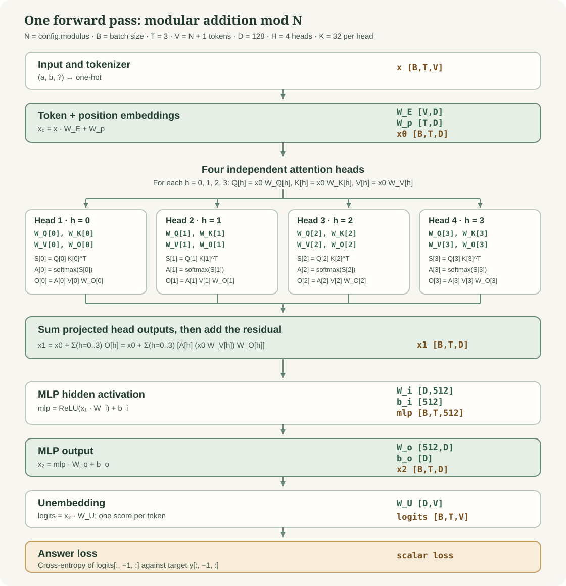

Class project · Collaborative lab
Build a one-layer transformer
Groups implement the pieces of a small model and test one another's work. We bring the pieces together, train on addition modulo N, and ask what the model learned.
forward.py and the remaining functions as time allows. Your group should be able to explain each test's expected result.Task 1
Read the architecture
Here N means the value of modulus in config.py. Our examples are equations a + b = c (mod N), with 0 ≤ a, b < N. The input is (a, b, ?); the target is (a, b, c). The extra token ? has integer ID N. Each token becomes a one-hot vector of length N + 1.

In forward.py, the named activations are x0, S, A, x1, mlp, x2, and logits. The learned parameters are W_E, W_p, W_Q, W_K, W_V, W_O, W_i, b_i, W_o, b_o, and W_U. The code stores all four heads in each weight tensor; W_Q[h], for example, is the separate query matrix for head h. Each Q, K, and V matrix maps from D to K dimensions, while each O matrix maps back from K to D. Find each parameter in model.py.
N + 1 output scores appear.Task 2
Understand one training step
- The model makes a forward pass and produces logits, one score for each possible answer token.
loss_fncompares the logits at the final position with the correct answer. Lower cross-entropy means the correct answer received more probability.loss.backward()uses backpropagation to compute how changing each parameter would change the loss: its gradient.- The optimizer changes the parameters in a direction expected to lower the loss. Repeat on the training examples.
Ordinary stochastic gradient descent (SGD) applies roughly the same learning rate to every parameter's current gradient. AdamW also tracks moving averages of past gradients and squared gradients, so it adjusts each parameter's step size. Its weight decay is applied separately from the gradient update. This project creates an AdamW optimizer in model.py.
In this small project, one call to model.train(inputs, targets) performs one optimizer step. This is a project-specific use of the name train; standard PyTorch uses train() to toggle training mode.
Task 3
Open your GitHub workspace
Open GitHub Codespaces and sign in. Choose New codespace, select the jonathanwise/one_layer_transformer repository and its project branch, then create the Codespace. This clones the project branch into your workspace automatically. If your group shares one screen, one member can drive while the others review.
In the Codespace terminal, confirm that you started from project, then create your group's branch from it. Use the group name assigned by the instructor:
git branch --show-current # should print project
git switch -c group-tokenizer
git statusIf Codespaces is unavailable, clone the project branch on a computer with Python and Git:
git clone --branch project https://github.com/jonathanwise/one_layer_transformer.git
cd one_layer_transformer
git switch -c group-tokenizerDo not put a second clone inside an existing Codespace.
Task 4
Verify that you can run and edit code
From the repository root in the terminal, install the small class dependency set and run the reference tests:
python -m pip install -r requirements.txt
python -m pytest -qrequirements.txt lists the packages needed for the class project and its tests. On an incomplete scaffold, some tests may fail until groups implement their functions. A missing dependency or import error is a setup problem; an assertion failure about a missing function is part of the exercise.
Open your assigned Python file. Add a temporary comment, save it, and check git status: the file should appear as modified. Remove that comment before making your real commit.
git status.Task 5
Divide the work
Give every group one implementation area and one different area for its first test. The table shows a possible assignment; the instructor can rotate or repeat areas as needed.
| Group | Implement | First test: choose a function in |
|---|---|---|
| A | tokenizer.py: one-hot encoding and parsing | data.py |
| B | data.py: unique modular equations | loss.py |
| C | loss.py: answer-position cross-entropy | forward.py |
| D | forward.py: attention, MLP, logits | tokenizer.py |
After the first test and your implementation, everyone should test forward.py (the group implementing it may use that time to strengthen its forward tests). Then try to add a test for every remaining function, including functions in your own file. The functions are tokenize_tensor, tokenize_values, tokenize_string, generate_data, generate_data_tensor, loss_fn, and forward_pass. The reference tests in tests/ are examples; add distinct cases to the matching tests/test_*.py files. Read each docstring and agree on shapes and meanings before changing code. The instructor owns config.py and the model's parameter definitions, so groups should leave those files alone.
Task 6
Write your test first
Choose a tiny case where you can predict the answer by hand. For example, a data test can check that a sampled pair (a, b) has target (a+b) % N; a loss test can check that changing logits at a known input position does not change answer loss. Use the reference tests for style, then add a case they do not cover.
python -m pytest -q tests/test_data.py
git add tests/test_data.py
git commit -m "test: check one modular equation"Replace the filename and message with your assigned first test. A failing test is useful if it fails for the behavior you intend to implement. Show the instructor the failure and your expected result.
Task 7
Implement, test, and commit
Implement only the function(s) assigned to your group. Run your focused tests, then the complete suite. Read failures from the first traceback line that points to your code. Ask another group about an interface mismatch before changing a shared contract.
python -m pytest -q tests/test_tokenizer.py
python -m pytest -q
git diff
git add tokenizer.py
git commit -m "Implement tokenize_tensor"Replace tokenizer.py and tokenize_tensor with your assigned file and first function. If your file contains more than one function, implement and commit each one separately. Next, add a new forward.py test unless that was already your assigned test; the forward implementation group should review and strengthen its own forward tests. Then test the remaining functions one by one, aiming to understand every function. Run each new test and make a separate commit for it. If a function needs a correction later, make another small commit for the correction.
python -m pytest -q tests/test_forward.py
git add tests/test_forward.py
git commit -m "test: check forward behavior"
python -m pytest -q
git push -u origin HEADCommit any tests for the other functions before pushing. Do not commit model checkpoints, data copies, or plots.
git status before opening a PR.Task 8
Open a pull request
After pushing, open the repository on GitHub. Click Compare & pull request (or Pull requests → New pull request). Set the base branch to project and the compare branch to your group branch. Give the PR a title such as Implement data generation and test loss.
In the description, state what you implemented, list the functions you tested and what those tests check, and give the command you ran. Ask one student from another group to review it. Address comments with new commits on the same branch; the PR updates automatically. The instructor will merge after checking that the pieces fit together.
Task 9
Agree on a training protocol
There are exactly N² ordered input pairs: N choices for a and N for b. Shuffle them once with a fixed seed. Use about 80% of the distinct pairs for training and keep the rest held out for evaluation. The script computes this split from config.modulus; you may override it with --train-size. Never take an optimizer step on held-out examples. Keep the same split and seed when comparing runs.
At step 0 and after every optimizer step, record answer-token loss and answer accuracy on both sets. The training set tells us how well the model fits examples it sees. The held-out set asks whether it has learned a rule that works on new pairs. With a small N, the held-out set is also small, so one changed prediction can move its accuracy substantially.
For a stricter experiment, split into train, validation, and final test sets: tune choices using validation, then evaluate the untouched test set only once. Our two-way class run calls its second set held-out; repeated inspection makes it function like a validation set.
Task 10
Train, plot, and discuss
After the instructor merges the PRs, update your workspace. First run the tests and a short training smoke test; then run the full experiment:
git switch project
git pull
python -m pytest -q
python train_experiment.py --epochs 2
python train_experiment.py --epochs 200The script writes runs/metrics.csv, runs/loss.png, and runs/accuracy.png. The loss plot has one line for training and one for held-out data; the accuracy plot shows the fraction of correct final answers. Examine the curves and report the final values and the step where the gap became noticeable, if any.
Optional: run the merged project in Colab
Open a new Colab notebook and run these cells. This small data set can run on Colab's CPU; a GPU is optional.
!git clone --branch project https://github.com/jonathanwise/one_layer_transformer.git
%cd one_layer_transformer
!python -m pip install -q pytest
!python -m pytest -q
!python train_experiment.py --epochs 200The clone command works when the repository is public. If it is private, ask the instructor for a safe way to provide the files; do not paste an access token into a shared notebook. Open runs/loss.png and runs/accuracy.png in Colab's Files panel, or display them with from IPython.display import Image, display followed by display(Image("runs/loss.png")). Colab runtime files are temporary, so download plots you want to keep.
For a second experiment, change only one choice—such as N, the random seed, number of training pairs, or number of training steps—and compare curves. Keep the first run as your baseline. Optional visualizations: an N × N grid of correct and incorrect answers, or the model's probability assigned to the correct answer over time. Larger N means more data and a wider vocabulary, so training may take longer. Later we will inspect how the network represents and solves addition.